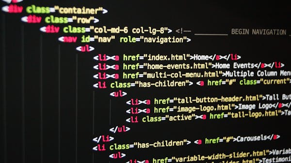

Learning HTML & CSS one step at a time

Inline CSS is a way to style HTML elements directly within the tag. While it's not the best for large projects, it's great for quick tests and understanding how styles apply to specific elements. Remember, we are not using complex layouts like Flexbox yet, but we can still make things look good!
Before diving into fancy styles, having a solid HTML structure is key. Using the right tags for headers, paragraphs, and lists makes your website accessible and easy to read. In this post, we explore the importance of semantic HTML
© 2026 My Practice Blog. All rights reserved